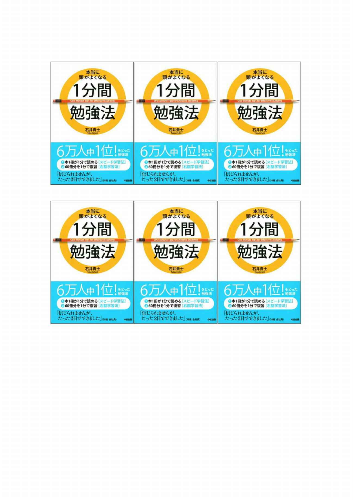
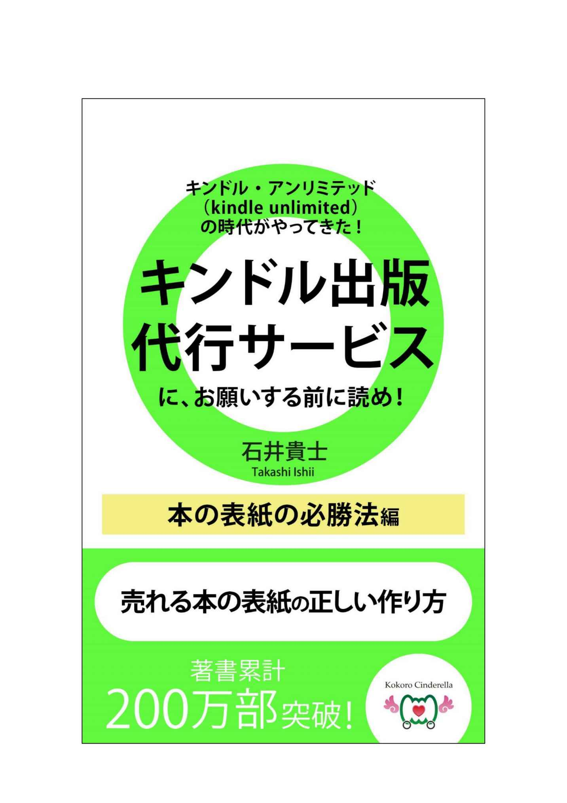
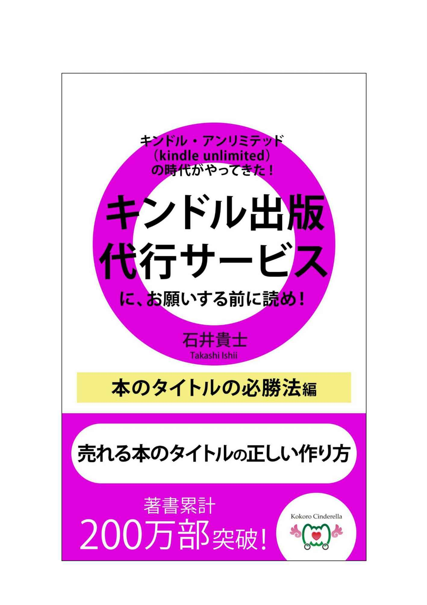
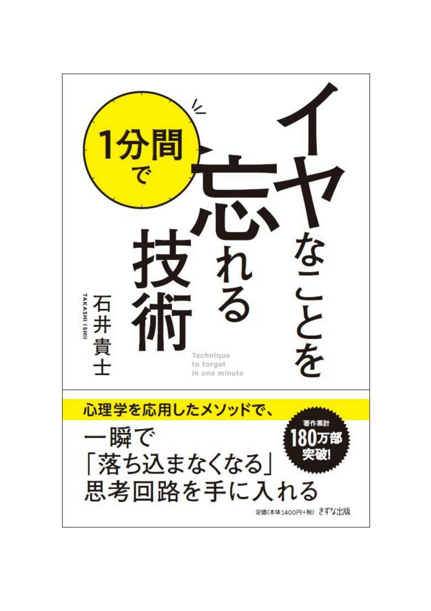
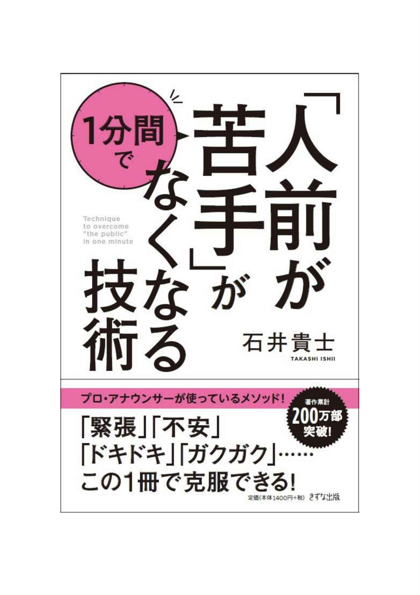

| どしベス 〜「どうしたらベストセラーを出せるの？」と思ったら読む本 入門編 | |
| 石井貴士 | |
| kabushikigaisyakokorocinderella (2016) | |
この本は、次の方に向けて、書きました。
・ベストセラーを出したい！ という作家志望者
・すでに本を書いているが、ベストセラーを出したことがない！ という作家の方
・ベストセラー編集者になりたい！ という編集者の方
ぜひ、私と一緒に、ベストセラーを出しましょう！
「どうしたら、ベストセラー本が出せるんだろう？」と、作家志望者・作家の方は、いつも考えていることでしょう。
「ベストセラー編集者になりたい！」と思っている編集者の方も、多いはずです。
では、どうしたらベストセラーを出せるのか？
この本では、ここのところを追求していきたいと思います。
私は現在、作家デビュー１３年目ですが、この１３年間、どうしたらベストセラーを出せるのかばかりを考え、本を書いてきました。
作家になりたいという作家志望者時代から考えれば、１５年以上、同じ問題を突き詰めていたことになります。
成功するための必勝法は、
１、すでに夢を実現する人を見つける。
２、その人に会いに行き、「どうしたらいいのか？」を聞く。
これが最短距離です。
では、まず１の「すでに実現している人」というのは、誰なのか。
１、１冊で１０万部以上、累計で１００万部以上を出している作家。
２、年間ベストセラー１０位以内に、自分の担当している本を入れたことがあり、独自にベストセラーを出す方法を持っている編集者。
だと、私は考えました。
１の、すでにベストセラーを出している作家は、大勢います。
ですが、そんななか、わたしが理想としていたのは、年間１０冊以上のペースで出すことだったので、多作であるという条件が、加わりました。
小説家の方ではなく、ビジネス書作家なので、そもそもの対象者となる作家の先生は、２０人以内に絞られました。
さらに、私がこよなく愛する文体ではないといけないと思ったので、結局は、中谷彰宏先生一人しか、いなかったというのが実際のところです。
中谷先生は、年間３０冊～５０冊の本を執筆し、面接の達人シリーズでも、１０万部以上を出されていて、私自身、９００冊以上は本を持っています。
そこで、毎週のように３年間通いつめ、「どうしたらベストセラーを出せるのか？」について、直接、教えていただきました。
編集者も、ベストセラー編集者の方とおつきあいさせていただくなかで、どうしたらベストセラーが出せるのかについて、何度も討論を重ねました。
日本トップクラスのベストセラー編集者となると、ビジネス書では、１０人以下に絞られるでしょう。
D社のI副編集長は、重版率５０～８０％
です。
ソフトバンククリエイティブのY編集長も、ベストセラー編集長です。
私の場合は、このお二人に担当していただいたものが、重版率５０％
以上になっています。
２人とも、まったく違うタイプではありますが、このお二人に鍛えていただいたおかげで、私には、ベストセラーを出すノウハウが、固まっていきました。
すでにベストセラーを出している作家の先生から学び、すでにベストセラーを出している編集者に１０冊以上を担当していただいたことで、私は、ベストセラーを出す必勝法を手に入れることができたのです。
「ベストセラーを出したいんです」という作家志望者の方は、たいていは、すでにベストセラーを出している作家に、会いに行こうとしません。
プライドが邪魔をしているのかもしれませんが、頭を下げて、方法論を聞きにいくのが、一番早いです。
作家志望者がベストセラーを出せない理由の一番は、ベストセラー作家に会いに行かないから。
これに尽きます。
編集者の方にも、何十人もお会いしました。
編集者の方のなかでも、ベストセラー編集者に会いに行って、教えを請う人は、とても少ないです。
「違う会社だから」「ライバル出版社だから」というのは、気にしすぎです。
たいていのベストセラー編集者は、「違う会社でも、出版界全体をよくしたい。他の出版社もベストセラーを出してくれれば、出版界全体がよくなる」と、広い心を持っているので、違う会社の編集者が会いに来たら、喜んでくれるはずです。
私の知る限り、ベストセラー編集者に直接会いに行き、「ぶっちゃけ、どうしたらベストセラーが出せるんですか？」と聞きに行っている編集者は、ほとんどいません。
「仕事が忙しいので」といった理由をつけて、会いに行かないのです。
本当に、もったいない話です。
作家志望者は、ベストセラー作家に会いに行くべきですし、編集者もベストセラー編集者に会いに行くべきなのです。
１０万部以上がホームラン。
３万部～９９０００部が３塁打。
３刷～２９０００部が２塁打。
重版がかかったら、ヒット。
というのが、ビジネス書のイメージです。
重版は、ビジネス書の場合は、２０冊に１冊がかかるというのが相場だと言われています。（今は、もっと低いかもしれませんが）
「で、著者の石井貴士は、度の程度の実績なの？」と思われる方もいるかもしれませんので、私自身の実績を、ご紹介します。
２０１６年９月時点で、累計６６冊を出版。
うち、３０冊前後に重版がかかっている。
１０万部越えは、３冊。
『本当に頭がよくなる１分間勉強法』は、年間ベストセラー１位。
（２００９年 ビジネス書 日販調べ）
累計で２００万部。
というのが、私の実績です。
重版率は、４割～５割なので、イチロー並みの成績だと自分では思っていますが、いかがでしょうか。
重版がかかるかどうかは、作家にとっての生命線で、重版がかかれば、次もお願いしようかということになり、重版がかからなければ、１年以上は、その編集者から声がかからなかったりすることもあります。
作家として継続するためには、重版率、すなわちヒット率を上げていくことが重要なのです。
編集者は、重版がかからなくても、クビになったりすることはありません。
１年で一度も重版が掛からないという編集者も、大勢います。
そのくらい、重版がかかるだけでも、難しいのです。
私の知る編集者のI氏は、その１年で、重版率８０％
を記録したこともありますが、トータルして、５０％
以上の重版率があるという、敏腕編集者です。
彼に作品を手がけて欲しいと、常に多くの作家が訪れていて、彼に本を手がけてもらうには、最低でも半年待ちという状態になっています。
（今の私でも数年待ちです）
作家に選ばれる編集者、というのは、多くの編集者が憧れるところですね。
「石井先生、うちの編集者を育ててください」と出版社の社長さんや、編集長さんから、ありがたいことに言っていただくことも、多くなりました。
その都度、「こうしたら重版がかかります。こうしたら売れる本になります」と、毎回のように同じことを言っています。
そこで、今回、この本を書くことで、多くの編集者の方にも、私なりのベストセラーを出す方法をシェアしていきたいと思ったわけです。
作家志望者の方からも、「どうしたらベストセラーが出せますか？」と聞かれることが多くなってきました。
今回、「どしベス」の入門編を書くことで、私自身のノウハウを、多くの作家志望者・編集者の方に伝えていけたらと考えました。
この本を通じて、ベストセラー著者が生まれたり、ベストセラー編集者がどんどん出てきたら、私として、これほどうれしいことはありません。
株式会社ココロ・シンデレラ 代表取締役・作家 石井貴士
「ベストセラーを出すコツは何ですか？」と聞かれたら、
「はい。タイトルと装丁（本の表紙）です」と答えます。
消費者（読者）の行動パターンから、逆算して考えてください。
まず、読者は、書店に行きます。
表紙と、表紙に書かれているタイトルを見ます。
その段階で「おっ」と思えば、手にとって中身をパラパラと見たり、まえがき、目次だけでも見てくれます。
ですが、タイトルと表紙の段階で、「おっ」と思われなければ、手に取ってももらえません。
そもそも、タイトルと表紙がよくないことが原因で、手に取られないという本は、９０％
以上なのです。
この１次審査が、もっとも厳しいといえるでしょう。
あなたも、書店に行って、すべての本を手に取るわけではないはずです。
１０冊、２０冊と、本の表紙とタイトルだけを見て、「違うな」と思って手に取らず、「おっ」とピクッと来たときにだけ、本を手に取るはずです。
つまり、９０％
以上の確率で、素通りされる本のタイトル・表紙のものばかりだということです。
そんななか、多くの人から「おっ」と思っていたらける本のタイトル・表紙になることが、ベストセラーを出すためには、まず最初に必要なのです。
「あの本は、内容がたいしたことがない。なのに、売れている。おかしい」と、誰しも思ったことはあるはずです。
一方で、「素晴らしい内容だ。なのに、さっぱり売れていない。埋もれている本だぞ」という本も存在します。
本の売れ行きに関係があるのは、中身よりも、タイトルと表紙です。
内容がよければ、「売れた後に、さらに売り伸ばすことができる」というだけです。
私自身、内容がいい本が売れて欲しいと、願っています。
ですが、内容がよかったとしても、ほとんどの本が、手に取られずに、返本されてしまうのが現実です。
まず、この現実を直視するところから、ベストセラーを出すための第一歩が始まります。
「内容がいい本が売れないのは、おかしい。
内容が良くない本が売れるなんて、世の中間違っている」
誰しもそう考えたいところですが、一方で、「売れる本がいい本であって、売れない本は悪い本だ」と考える出版関係者も多いです。
私個人の意見としては、「売れれば正義だ」とは、まったく思っていません。
ですが、あまりにも、タイトルと表紙の段階で、売れないことが確定している本が多すぎるとは考えています。
１冊３００万円の経費をかけて本を作るのに、９割の本が、タイトルと装丁で失敗しているのです。
「売れれば正義」というよりも、「売れないことが確定しているのに、本を出すことが悪」だと思うのです。
出版の世界では、「１０万部以降は、神の領域」と言われます。
どういうことかというと、１０万部の本が、１５万部になるのか、３０万部になるのか、７０万部になるのか、１００万部になるのかは、人間の力ではコントロールできないということです。
１０万部を超えるのですから、何か素晴らしい要素があるには、違いありません。
１０万部の本と、３０万部の本で、内容が３倍素晴らしいということもありません。
１０万部の本は、１００万部の本に比べて、内容が１０分の１しかないということも、ないのです。
１０万部を超えたら、広告を打って伸ばしたりすることは可能ですが、どこまで伸びるかは、神のみぞ知るというわけです。
私の本の中で一番売れた、『本当に頭がよくなる１分間勉強法』は、５７万２５００部です。
１００万部には到達していませんが、これも、「神の見えざる手」によって、この部数になっているというわけです。
逆に言えば、９９０００部以下の本は、神業ではなく、人間業だということです。
人間の考えうる範囲で、何か１０万部に到達しない要因があるから、１０万部に行かないのです。
帯の色が悪いのか、キャッチコピーが悪いのか、販売時期が悪いのか、何か人間レベルで、売れない原因が存在するということなのです。
せっかく本が書店に平積みされても、２週間以内に返本されてしまう本があります。
ひどいときには、書店のアルバイト店員さんが、「並べるのも面倒だな」と言って、勝手にダンボールの封も開けずに、送り返してしまうケースもあると聞いたことがあります。
何が問題だったかというと、タイトルを見ただけで、「どうせ売れないんだな。平積みしても無駄だな」と、アルバイトさんに思われてしまったのが原因です。
タイトルを見ただけで、ダンボールを開ける前に、アルバイトの店員さんにもワクワクしてもらう必要があります。
ここまで考えて、タイトルを決めなければいけないのです。
まずダメなタイトルは、読めないタイトルです。
「え？ タイトルの漢字が読めない！」と思われたら、どこの棚に置いていいかもわからないので、そのまま返本されるケースもあります。
タイトルを見た瞬間に、アルバイトの店員さんがどんな本かがわかる本が、平積みされやすい本なのです
１冊だけが平積みされたときよりも、横に並べて２冊平積みされたら、２倍の威力になります。
平積み力を見るときに、オススメの方法があります。
本を出す前に、本を６冊並べてみるのです。
奥に３冊、手前に３冊を並べて、６冊平積み状態を作ります。
そのときに、威力があると思える本が、平積み力がある本です。
たとえば、１分間勉強法の場合を、ご覧ください。

どかんと、目に飛び込んでくるはずです。
６冊並べたときにインパクトがない本は、１冊だけのときは、６分の１以下の威力しかないということです。
ベストセラーが出ると、ワゴンセールとして、ワゴンに１００冊、置かれます。
そのときに、この６面平積みの状態になるわけです。
ベストセラーから逆算して本を作る。
そのためには、６冊ある状態を、本が出る前に作って、「果たして、売れるだろうか？」と考えればいいのです。
平積みも、いつかは溶けます。
溶けたら、どこかの棚（コーナー）に、背表紙だけが見える状態になります。
そのときに大切なのは、「どの棚（コーナー）に置かれるべき本なのか？」が、一目でわかる本になっていることです。
アルバイトの店員さんが、どこの棚に入れるべきかがわかる本が、売れ続ける本です。
『１分間英単語』であれば、英単語の本だということがわかります。
学習参考書コーナーに置くか、英語本のコーナーに置くかと、書店員さんは考えてくれます。
『プチリタイヤする方法』というタイトルだったら、コンピューターの棚なのか、副業の本なのか、株の本なのか、不動産の本なのかがわかりません。
私の２冊目の本『何もしないで月５０万円！ 幸せにプチリタイヤする方法』は、独立・起業志望者に向けた、インターネットを使った起業ノウハウの本でした。
平積みされたおかげで、３ヶ月で２万８０００部まで行きましたが、その後、どのコーナーに置いていいか、書店員さんがわからずに、全国の書店から消えてしまったという悲しい過去があります。
どのコーナーに置かれるか？ が誰にでもわかるタイトルの本が、ロングセラーになるのです。
「平積みになっている本が、売れている本だ」と思っている方は、編集者の中にも多いです。
実は、本の８０％
は、「棚さし」になってから売れると言われています。
「平積みで売れているなあ」と言っても、売り上げの２割にすぎません。
８割の本は、棚にささってから、売れているのです。
逆算して考えれば、「背表紙が素晴らしい本は、ロングセラーになりやすい」ということです。
編集者の方から、本の表紙の見本ができたときに、たいていの場合、「この本の装丁は、いかがですか？」と、表の表紙だけをみて、話をします。
「いや、この背表紙なんですけど」と私が言うと、「え？ 背表紙？」と驚かれることが多いです。
重版率を上げていくためには、表表紙だけではなく、背表紙も重要なのです。
多くの本が、表紙の表部分だけにこだわって、作られています。
そんななか、背表紙にこだわった本を作れば、「棚さし」になったときに、差別化されるので、売れていきます。
ロングセラーは、背表紙で作られる。
本の背表紙にこだわることで、他の出版社が気づかないところで、売れ行きを伸ばしていくことができるのです。
ベストセラーになるために必要なのは、横付け戦略です。
どういうことか、ご説明します。
１、すでに売れている本を見つける。
２、隣に、その本以上に優れたタイトル、その本以上に優れた表紙の本を置く。
これが、横付け戦略です。
１分間勉強法をベストセラーにしたいと思ったときに、何をしたか、ご説明します。
まず、２００８年度の年間ベストセラーランキング１位が、『脳を活かす勉強法』（茂木健一郎 PHP研究所）でした。
そこで、どんなタイトルの本を、この本の横につければ、この本以上に売れるのか？ と考えたのです。
茂木先生は、脳科学の専門家。
科学的根拠があるというコンセプトで作られた、勉強法の本でした。
そこで、脳科学に対して、「スピードに特化した勉強法の本を横におけば、勝てる！」と思ったわけです。
『脳を活かす勉強法』が、緑色の装丁だったので、こちらは、白地にオレンジの丸、青い帯で勝負しました。
「横に置かれたら、こちらの本を手に取るはずだ」というところまで考えて、１分間勉強法はリリースされたのです。
１分間勉強法は、どんなイメージの装丁だったのか。
答えは、『電車男』です。
青い帯は、『電車男』と同じ色がいいと思って、同じ色にしていただきました。
１分間勉強法が５０万部以上売れていて、どの編集者の方も、読者の方も、このことにまったく気づいていただけないので、恥ずかしながら、自分から言います。
ベストセラー本の装丁を作るときには、一から装丁を作るのではありません。
１、すでに違うジャンルで売れている本の装丁をベースにする。
２、自分が出したいジャンルに、同じような装丁を放り込む。
これが、オススメです。
私が開発した方法なので、誰もやっていません。
パクリ本だとも思われない、すごい方法です。
『電車男』という小説がヒットしました。
もちろん、小説のコーナーに置かれています。
ビジネス書のコーナーには、『電車男』と似たような装丁の本が、ありませんでした。
ということは、ビジネス書のコーナーに、『電車男』と同じように、白地に、青い帯の本があれば、爆発的に売れるのではないかと、仮説を立てたのです。
『もしドラ』（ダイヤモンド社）の装丁は、ライトノベルの装丁です。
ライトノベルでは、萌え系の女の子が中心に１人写っているものが、売れていました。
だから、ビジネス書のコーナーに、ライトノベルでヒットした装丁を持ってきたというわけです。
このことにも、いまだに、多くの作家・編集者は気づいていません。
１分間勉強法が、『電車男』をモチーフにしたとも、まだ誰も気づきません。
そのくらい、ジャンルが違うというだけで、パクリだとも思われないのです。
ビジネス書の編集者は、ライバルになりそうなビジネス書の装丁は研究していますが、ライトノベルや、小説コーナーの装丁は、気にもかけていません。
小説の編集者は、ビジネス書の装丁を研究していません。
「ここまでばらしていいのか」ということまで話してしまいましたが、このくらい研究して初めて、１０万部以上のベストセラーが出るのです。
「１０万部を超えたことがない」という作家・編集者は、単に、研究が足りないということが原因で、売れる本が出せていない可能性があります。
装丁に関しても、研究に研究を重ねる人が、ベストセラーが出せるようになるのです。
読者が、書店に行って本を眺めているときに、心の中で、何をつぶやいているのか？
それは、
「自分に関係ある本は、ないだろうか？」
これだけです。
中学生は、高校生の学習参考書コーナーにはいきません。
なぜなら、関係ないからです。
大人は、小学生の算数の問題集が置いてあるコーナーにはいきません。
関係ないから、行かないのです。
ビジネス書のコーナーに行く読者は、自分に関係ある本はないかなあと思って、本を探します。
宅建を取ろうと思っている人は、宅建コーナーに。
株をやりたいと思っている人は、株のコーナーに行きます。
関係ある本であれば買うけど、関係ない本は、面白くても買わない。
これが、読者の心理です。
ということは、「これは私のために書かれた本だ」「自分に関係あるぞ」という本であれば、売れるということなのです。
『ノストラダムスの大予言』という本が、ベストセラーになりました。
なぜかというと、「１９９９年７の月に、恐怖の大魔王が降ってくる」と言われたら、自分には関係あると思った方が多かったからです。
予言の内容が、「フランスだけで起きる」ということであれば、日本人は関係ないので、買いません。
自分に関わることだと思ったから、多くの人が買ったわけです。
ですが、２０００年以降に、ノストラダムスの本が売れたかというと、売れていません。
多くの人が、「もう関係ない」と思ったからです。
あなたが税理士だったら、「税理士がお金持ちになる方法」だったら買いますが、「公認会計士がお金持になる方法」だったら、買いません。
「税理士がお金持になる方法なのであれば、公認会計士にだって、当てはまるはずだ」と、応用しようという読者は、いないのです。
『資格試験に合格する方法』であれば、資格試験を受験しようとしている人、すべてが「自分に関係ある」と思います。
『司法試験に合格する方法』であれば、公認会計士試験を狙っている人は、買いません。
「自分に関係があるか」しか、読者は興味がないのです。
１分間勉強法は、勉強法の本でありながら、１冊１分で読むという手法が書かれている本です。
つまり、ターゲットは、
１、勉強法マーケット
２、速読マーケット
の読者です。
単なる勉強法の本であれば、勉強法の本に興味がある人しか、買いません。
そこで、速読マーケットの人にも訴求できるようにしたのです。
こうしないと、『脳を活かす勉強法』は越えられないと考えたわけです。
ダムがあるとして、ひとつの川からだけ水を引くのではなく、２つの川から水を引いたのです。
『もしドラ』が売れたのは、
１、ドラッカーが好きな、ビジネス本の読者のマーケット。
２、ライトノベルが好きな、小説の読者のマーケット。
この２つに訴求したから、爆発的なヒットになったのです。
最近は、『マンガでわかる』というシリーズが売れていますが、こちらも、
１、ビジネス書の読者のマーケット
２、マンガファンのマーケット。
の２つの川の流れからの、読者の流入を狙っています。
あなたが出そうとしている本は、ひとつの川の流れからだけを狙ってはいないでしょうか。
『１分間英単語』は、
１、トイック志望者マーケット
２、大学受験生のマーケット
の２つの川からの流入を狙って、作成されました。
内容に関しては、大学受験で頻出の英単語をベースに、収録しています。
ですが、出版コードは、学習参考書コードではなく、語学書コードです。
これにより、発売して一ヶ月で、いきなり５万部のヒットになったのです。
（現在は、１５万部です）
学習参考書コードで出したいと、当時の中経出版の担当者に言ったところ、
「石井さん。高校生・浪人生は、お金がありません。それよりも、トイックを勉強したいと思っている大人のほうが、切実に、この本を必要としています。語学書コードでいきましょう！」と、私を押し切ってくださったのです。
その決断のおかげで、今は、大学生から社会人まで買っていただける、英単語のシリーズになりました。
３つ以上の川だと、ターゲットが不明瞭になってしまう危険性があるので、おすすめしません。
ですが、「２つの川（マーケット）から、読者を持ってくる」という意識であれば、ベストセラーになりやすいのです。
ベストセラーを出すには、初心者を狙ったものである必要があります。
「東大志望者のあなたのための本です」というのは、ピラミッドの頂点の人たちしか買わないので、マーケットは小さいです。
「基礎問題集です」といえば、ピラミッドの底辺にあたる人たちも買いますし、ピラミッドの頂上の人も、復習用に買うので、売れます。
数学の参考書でも、基礎問題集の『青チャート』のほうが、難問ばかりの『赤チャート』よりも、売れます。
参考書の世界は、複雑なので、ここで補足します。
参考書の世界は、やはり、難関大向けよりも、基礎問題集だったり、補習用のものが売れます。
ですが、東大志望者向け、早稲田・慶應志望者向けが売れないのかというと、そんなこともないのです。
どういうことかというと、勉強ができる生徒は、ひとりで何冊も参考書を買います。
英語だけで２０冊、５０冊と買っている生徒も多いです。
勉強ができない生徒は、なるべく１冊の本だけで、安く済ませようとします。
勉強にお金をかけるのが当たり前になっている、勉強ができる生徒も、お金をかけたくないという勉強ができない生徒にも、両方にリーチできるものが、一番望ましいといえます。
一般的に言えば、初心者マーケットが売れるが、受験参考書においては、初心者マーケット以外も、お金を出す層が存在するので、売れる。
これが、受験参考書の市場なのです。
専門書は、売れません。
なぜなら、専門家しか買わないからです。
大学教授の本が、５０００円くらいで売られていることがありますが、読者の数が少ないので、価格を高くするしかないのです。
売れるためには、入門書が売れます。
『易入門』（黄小蛾）という本が、ベストセラーになりました。
これも、入門とつけたからです。
『タロット占い 上級編』は、売れません。
『タロット占い入門』であれば、売れます。
『１分間易入門』という占いの本を私は出しているのですが、意図的に、「入門」という言葉をつけています。
困ったら、タイトルに『入門』と入れると、初心者マーケットに訴求できるのです。
入門書ということは、はじめての人向けの本だということです。
なので、タイトルに「はじめての」と入れると、ベストセラーになりやすいです。
占星術家の鏡リュウジ先生は、４００冊近い本を出されていますが、特に売れている本が、『はじめてのタロット』という本です。
これは、初心者マーケットに向けていると思われるから、売れているのです。
最近、キンドル本で売れた本で『はじめての引き寄せの法則』があります。
多くの人が、引き寄せの法則の本を買っています。
そこで、初心者向けのタイトルとして、「はじめての」とつけたのです。
そのおかげで、発売してすぐに、ランキング上位に入ることができています。
「はじめてのおつかい」というテレビ番組のコーナーが流行りましたが、これも、おつかいに行く３歳児という初心者マーケットを対象にしているから、多くの人が共感するのです。
「はじめての税理士試験」
「はじめてのパソコン」
というタイトルの本であれば、初心者も中級者も上級者も、思わず、手に取ってみたくなるのです。
『インターネットビジネスの参考書』というタイトルよりも、
『インターネットビジネスの教科書』というタイトルのほうが、売れます。
なぜなら、「教科書」というタイトルだと、「最初の１冊はこれからな」と思われるからです。
タイトルに困ったら、「教科書」とすれば、確実な売れ行きが見込めます。
『ビジネス書の編集者の教科書』
『ビジネス書の編集者の参考書』
であれば、最初に買うのは、前者のほうです。
いかに、スタンダードな教科書だと思ってもらえるかで、本の売れ行きが決まります。
『ルールズ』という女性向けの恋愛本がありますが、これも、基本的なルールだと思われるから、売れたわけです。
『恋愛の教科書』
『恋愛の参考書』
であれば、前者のほうが、ベストセラーになるのです。
学習参考書では、物理・化学・生物の本は安いですが、「地学」の本だけ、２０００円以上したりします。
地学を選択する生徒が、そもそも少ないからです。
「地学の本でベストセラーを出せ」と言われても、そこに読者がいないのであれば、難しいです。
社会でも、日本史、世界史はメジャーですが、地理はマイナーです。
あえてそこで勝負するのもアリかもしれませんが、ベストセラーは望めないでしょう。
ちなみに、『１分間日本史』『１分間世界史』は、両方とも９年で４万部を超えるベストセラーになっています。
この２冊も、実は、横付け戦略から編み出されました。
山川出版社から出されている、日本史、世界史の１問１答は、ロングセラーで売れていました。
ならば、白黒ではなく４色で、カラフルな１問１答の本が横にあれば、こちらのほうが売れるのではないかと思ったのです。
そのおかげで、２００７年に発売されて以来、９年間にわたり、いまだに書店に置かれ続けています。
それでも、１分間地理は、マーケットが小さいので、出してくれる出版社は、まだありません。
広いマーケットに対しての本だけが、ベストセラーになるポテンシャルを秘めているのです。
「身近」がベストセラーになるためのキーワードだと言われています。
「関係あること」というのは、言い換えれば、その人にとって「身近だ」ということです。
『１億円稼ぐ方法』だと、身近に感じられません。
『３０００万円稼ぐ方法』でも、身近ではないです。
『月５０万円稼ぐ方法』なら、身近なので、ヒットします。
「今日、内閣総理大臣が、アメリカに出発した」ということよりも、
「近所の八百屋さんで、魚が２０円で売られていた」ということに、人は興味を示します。
身近だと思えるからです。
『節約術』『収納術』『片付けの方法』『整理術』の本は、ある程度は売れます。
誰にとっても、身近だからです。
お見合いパーティーでは、年収４００万円～６００万円の人が、モテます。
逆に、年収２０００万円と書いていたら、身近ではないと思われて、敬遠されます。
独身時代に、年収２０００万円と書いて、お見合いパーティーに行ったことがあるのですが、「サクラの方ですよね？」と言われて、まったく女性から相手にされなかったことがあります。（年収以外が原因だったかもしれませんが、そこは突っ込まないでください）
年収４００万円、年収６００万円というプロフィールの男性の方が、「身近だ。結婚できるかもしれない」と思われて、お見合いパーティーではモテると、聞いたことがあります。
「身近」であることが、ベストセラーを出すために、必要なことなのです。
シャランQは、『シングルベッド』という曲で、大ヒットを出しました。
ワンルームマンションでシングルベッドを使っていることを、身近だと多くの人が思ったからです。
『ダブルベッド』『セミダブルベッド』というタイトルでは、売れなかったはずです。
身近なことをテーマにした曲だったから、売れたというわけです。
もし、『大富豪の僕が、恋をした』『年収１０億円の僕の、恋の行方』だったら、誰も共感できなかったはずです。
共感があると、感情移入をすることができます。
母一人、子一人というシチュエーションの曲であれば、同じ境遇の人は、身近なので、聴きたいと思うはずです。
『ビット・トレーダー』（樹林伸）という本は、長男がいて、長女がいる２人兄弟のストーリーですが、私と同じ境遇だったので、ものすごく共感できました。
一人っ子をテーマにした本であれば、一人っ子にとっては身近に感じます。
ベストセラーを出すためには、多くの人から身近だと感じてもらうことが、大前提となってくるのです。
認知不協和とは、本来そうであるべきものが、そうでないことを言います。
タイトルを見た瞬間に、「え？」という引っ掛かりがあって、その場で立ち止まらせることができたら、認知不協和に成功しているということです。
『五体不満足』は、「え？ 五体満足の書き間違えじゃなくて？」と、思わせたことで、認知不協和を生んでいます。
『頭の体操』という本がヒットしましたが、通常は、体操といえば、体の体操なわけです。
「え？ 体の体操じゃなくて？」と思わせることに成功しました。
『IQクイズ』というタイトルでは、売れなかったはずです。
『頭の体操』というタイトルにしたことで、売れたのです。
私が書いた『何もしないで月５０万円！ 幸せにプチリタイヤする方法』は、プチリタイヤという言葉が、認知不協和を生んでいます。
「え？ セミリタイヤじゃなくて？ プチリタイヤなんて言葉があるの？」と思わせたことで、手にとってもらうことができました。
『１分間勉強法』も、認知不協和を利用したタイトルです。
通常、勉強は、１時間以上かけてするものです。
「え？ １分で勉強ができるの？」と、タイトルを見た瞬間、認知不協和が起こります。
認知不協和で、本は売れるようになるのです。
『作家になって、毎年１億円稼ぐ！』
『セミナー講師になって、毎年１億円稼ぐ！』
という電子書籍を私は出していますが、これは、１億円稼ぎたい人を集めたいから出しているわけであって、ベストセラー狙いではありません。
わざと、ベストセラーではなく、興味がある人だけに手にとってもらえるタイトルにしています。
ベストセラーを出す方法を研究するということは、逆に言えば、ベストセラーをわざと出さずに、ターゲットとなる人だけに買ってもらえる本も、出せるようになるということです。
弊社では、「キンドル出版代行サービス」を展開しています。
そのために、キンドルで本を出したいという人だけをターゲットにした電子書籍を出しています。
『キンドル出版代行サービスにお願いする前に読め！ 本の表紙編』
『キンドル出版代行サービスにお願いする前に読め！ 本のタイトル編』
の２冊は、キンドル出版代行サービスに興味を持っていただける方に、手にとってもらえるような表紙・タイトルにしているのです。


「◯◯する前にこれを読め！」というのは、とてもいいタイトルです。
なぜかというと、他のライバル本を無効化できて、なおかつ、自分の本に読者の目を向けられる、鬼のようなタイトルだからです。
独立・起業コーナーで、
『独立する前に読む本』というタイトルがあったら、ほかの独立・起業志望者向けの『こうすればビジネスモデルができる』という本よりも、先に手にとってもらえます。
『辞表を提出する前に読む本』であれば、『辞表の書き方』の本よりも、前に読まれるので、売れる可能性が高くなります。
『数学を勉強する前に読む本』であれば、ほかの数学の参考書よりも先に、手にとってもらえます。
『ドラッカーを勉強する前に読む本』であれば、元祖ドラッカーの本よりも、売れる可能性を秘めています。
１分間勉強法を出した２年後に私が出した本のタイトルが、『勉強のススメ』（サンマーク出版）です。
発売されてすぐに、４５０００部になりました。
このタイトルは、そもそも勉強をする前段階の人をターゲットにしたタイトルです。
勉強法のコーナーに行って『勉強のススメ』というタイトルがあったら、そもそも勉強本を買う前に、こちらの本を買うはずです。
『料理の本』よりも、『料理をする前に読む本』のほうが、確実にマーケットにリーチできるのです。
毎年確実に５０００部の重版が１０年かかる本は、１０年で５万部になります。
こういったロングセラーの本が、優れた本です。
「手帳の高橋」として有名な高橋書店は、ロングセラーばかりを狙っている出版社です。
手帳は、毎年のリピート商品です。
売れた手帳には、『４月から始まる手帳』『９月から始まる手帳』として出していけば、年に３回、セールスチャンスも生まれることになります。
高橋書店は、家計簿も出していますが、これも、毎年のリピートにつながります。
ドカンとベストセラーよりも、毎年５０００部以上が重版される本を作ろうとするのが、ロングセラー戦略です。
高橋書店では、手紙の書き方の本も、ロングセラーになっていて、１０万部を超えています。
カレンダーも、一度売れたカレンダーは、また翌年も売れるので、ロングセラーになりやすいです。
高橋書店のホームページを見るのが、ロングセラーを出そうと思った時に、一番勉強になるのです。
占いの本は、自分に関係あると思ったものだけを、買います。
『Ａ型の教科書』
『Ｏ型の教科書』
『Ｂ型の教科書』
『ＡＢ型の教科書』
であれば、自分に関係あるものだけを買います。
シリーズで１０万部になっていく可能性は、とても高いです。
『牡羊座の教科書』
『牡牛座の教科書』
『双子座の教科書』
と、１２星座別にすれば、トータルで１０万部が狙えます。
細木数子先生の、六星占術の本も、毎年売れます。
『土星人プラス』
『土星人マイナス』
と、それぞれの星で、自分に関係ある本だけを買います。
占いは、自分に関係があると思った部分だけが、気になります。
占いは、３３歳女性をターゲットにしたものが、一番売れると言われています。
ヤフー占いも、統計を取ると、３３歳女性が突出してお金を払っていると言われています。
なぜ、３３歳女性なのか。
２０代は、若さでなんとかなったので、占いに頼る必要などなかった。
そうこうしているうちに、３０代になってしまった。
３５歳までには結婚したい。
付き合って２年以内に結婚したい。
そう考えると、３３歳のうちに、結婚相手を見つけたい。
３３歳まで仕事をバリバリしてきたので、占いに使うお金を持っている。
ということで、３３歳女性が、一番占いを利用するという結論になるそうです。
占い本を書く場合には、３３歳の女性をターゲットにすると、もっとも売れる本になります。
ヤフー占いは、３３歳の独身女性の気持ちから逆算して、コンテンツを用意するようにしていると、言われているのです。
「今年は当たり年だった。７０％
以上の重版率だ」というよりも、コンスタントに毎年、４０％
の重版が決まる人の方が、真理に到達できています。
秋元康先生は、おにゃんこクラブもヒットさせることができ、AKB48もヒットさせることができています。
どんな時代でも売れる、普遍的な考え方が、根底にあるからです。
ベストセラーも、いつもコンスタントに出せてこそ、ホンモノです。
「石井先生は、実績があって、ファンも付いているから、重版がかかるんですよ」という人がいます。
確かに、石井貴士として本を出すのが、一番多くの方に見てもらえるので、石井貴で本を出しています。
そんななか、今後は、ペンネームで漫画原作をしたり、小説も書いていきます。
もしかしたら、年間ベストセラーランキングの１０位以内の３人が、「実は石井貴士のペンネームだ」ということも、あるかもしれません。
「一番嫌いな作家は石井貴士だ。絶対に買わないぞ」という人がいたとして、同じ人が「一番好きな作家は、実は石井貴士のペンネームだった。全巻漫画を揃えていた」と悔しがることも、あるかもしれません。
漫画原作者で日本一と言われる、樹林伸先生は、７つのペンネームを持つ男として、知られています。
『金田一少年の事件簿』『エリアの騎士』『神の雫』『ブラッディマンディ』など、累計３億部をたたきだしているという原作者の方です。
先入観を持たれないようにして、原作者名をわざと変えているというわけです。
秋元康先生も、プロデュースをお願いされた時に、「これは秋元康でやりますか？」「それとも、私の名前は出さないようにしますか？」とご自身で提案されるそうです。
もしかしたら、あなたがいつも使っているサービスは、秋元康先生が、匿名でプロデュースしていた製品だったということは、大いにあるのです。
常にベストセラーを出し続けるには、研究が必要です。
私自身、１日に３回、書店に顔を出していた時期があります。
毎回、買うわけではありませんが、ビジネス書コーナーに、１日３回行って、どんなタイトルの本を隣におけば売れるのだろうかと、ずっと考えていたのです。
多くの作家・編集者は、１日に３回、書店に足を運ぶ習慣がありません。
ですが、１日３回、書店に足を運んでいれば、「この本は、置かれている位置が変わっているな。平積みが４日で溶けたな。この本は、２ヶ月も平積みされているぞ」ということが、わかってきます。
ベストセラーを出すために必要なのは、「愛があること」です。
秋元康先生もアイドルを愛していますし、樹林伸先生も漫画を愛しています。
私も、本を愛しているので、どうしたらベストセラーが出せるのかばかりを、考えてしまっているというわけです。
小手先のテクニックではなく、本に対する愛がある作家・編集者が、ベストセラーが出せるのです。
メガトレンドは、竹村健一先生が作った言葉です。
何十年とずっと続く、大きなトレンドのことです。
少子化もメガトレンドですし、お金が欲しいという願望も、メガトレンドです。
彼女が欲しい、頭が良くなりたい、英語を勉強したいというのも、メガトレンドです。
こういったメガトレンドを意識して作られた本は、売れやすいです。
「彼女ができなくなる方法」は、売れませんが、「彼女ができる方法」ならば、男性ならば手に取ってみたいと思うはずです。
「貧乏になる方法」よりも「お金持ちになる方法」が知りたいです。
「流れに逆らって、新しいものを作るんだ」という考え方では、ベストセラーは出ません。
トレンドに逆らわず、どんどんトレンドに乗っていくのがベストセラーを出す秘訣です。
以前、私がアナウンサーだった時に、上司から、「巨人ファンだと言え」と言われて、「嫌です！」と拒否して、怒られたことがあります。
多くの人が巨人ファンなわけだから、巨人ファンだと言えば、お前にも多くのファンができるぞというわけです。
理にかなっていますが、私は、大の中日ドラゴンズファンです。
『月刊ドラゴンズ』を読んで育ったわけですから、ここは譲れません。
たまたま、長野県の南の地域は、愛知県に接していたので、ドラゴンズファンだということは許されました。
ですが、もし、北海道でアナウンサーをしていたら、ファイターズファンですと言ったでしょうし、福岡でアナウンサーをしていたら、ホークスファンですと、言ったはずです。
自分の主義・主張を捨ててでも、大多数と同じだと思われたほうが人気が出やすいというのが、アナウンサーという職業でした。
アナウンサーとして鍛えられたおかげで、「大多数のマーケット（市場）に受け入れられるかを意識して、仕事をする」というのが、当たり前になりました。
ロッテファンや、オリックスファンだとしたら、言わないほうがいい。
言ったら、人気が落ちることも覚悟しなければいけないという世界で、生きてきました。（ロッテファンの方、オリックスファンの方、すみません）
あなたがどんなことを考えている人であれ、ベストセラーを出したいと思ったら、大多数から受け入れられるようなタイトルで、本を作ったほうがいいのです。
『もし、高校野球の女子マネージャーが、ドラッカーのマネジメントを読んだら』は、略して『もしドラ』です。
プチリタイヤも、「プチリタ」と略せます。
番組の名前では、SMAPSMAPも、スマスマ。
めっちゃいけてる！ もメチャイケです。
コンビ名では、
ナインティナインも、ナイナイ。
ウッチャンナンチャンも、ウンナンです。
私がアナウンサー時代に担当していたラジオ番組の名前も、「石井貴士のスマイルクルーズ」、略してスマクルです。
人は、略せるものを、身近に感じます。
『マネジメント』（ドラッカー）というタイトルは、略せないので、身近ではありませんが、『もしドラ』だと、身近に感じるのです。
ベストセラーのキーワードは、「身近」なのですから、本のタイトルの、略せることを前提に考えたほうがいいのです。
この本のタイトルは、『どしベス どうしたらベストセラーが出せるの？ と思ったら読む本』です。
どしベスは、「どし」がひらがな、「ベス」がカタカナで、認知不協和を狙っています。
「なんなんだ？ このタイトルは」と思ったはずです。
そしてすぐ下に、どうしたらベストセラーが出せるの？ と思ったら読む本と書いてあるので、その略だということがわかるわけです。
「タイトルで、認知不協和をわざと作る」「略せるものがヒットする」ということを言いたいがために、この本も、認知不協和があり、なおかつ略したタイトルにしたというわけです。
入門書がヒットするので、「入門編」としているわけです。
そのおかげで、あなたは数あるキンドル本の中から、この本を選んで、ダウンロードしてしまったというわけです。
これが、「認知不協和」「略せるものがヒットする」「入門編」の威力です。
知っていれば、意図的にベストセラーは作れるのです。
ベストセラーの出し方という本はあっても、ベストセラーを出した後は、どうすればいいのかは、誰も教えてくれません。
「競馬の勝ち方」の本はあっても「勝った後にどうするか」までは、書いていないのです。
では、ベストセラーを出した後は、どうしたらいいのか。その答えは、
何もしない。
これが答えです。
何もしないのが、ベストセラーを出した後には、一番の戦略です。
ベストセラーが出ると、他の出版社から「うちでも出してください」と、オファーが来ます。
その申し出に気を良くして、もう１冊出してしまうとどうなるのか。
せっかくベストセラーになっていた本が、売れなくなってしまうのです。
なぜかというと、読者は、その著者の一番言いたいことは「最新刊」の内容だと思ってしまうからです。
せっかく１冊ベストセラーが出たら、口コミが起きる時間を待つために、何もしないというのが、正解です。
たとえば、あなたが牛丼屋をオープンしたとします。
ヒットした時に「よし。牛丼屋がヒットしたぞ。次はカレー屋もやろう」と言って、カレー屋をオープンさせたらどうでしょう。
この店長は、本当はカレー屋をやりたかったんだなと、お客さんは思います。
せっかく牛丼屋がヒットしたのですから、しばらくそのままにしておけば、ヒットは継続します。
他のビジネスには手を出さないほうが、いい結果が生まれます。
そして、「牛丼屋が売れなくなった。どうしよう」となったときに、カレー屋をオープンさせればいいのです。
「お。次はカレー屋だってよ」という口コミが広がり、ヒットする可能性が生まれます。
私は、１分間勉強法がヒットしたときに、シリーズ以外の本は、出しませんでした。
２００８年８月に１分間勉強法が出て、次に１２月に、１分間英単語を出しました。
その後は、１分間英熟語や、１分間日本史、１分間世界史などのシリーズだけを出すようにして、ほかのコンセプトの本は、わざと出さないようにしました。
売上が上がっている間は、ほかのことに手を出してはいけない。
これは、ビジネスのルールです。
以前、独立・起業志望者向けの会員制組織「プチリタイヤ」が、２０００人規模になるというブレイクを、２００３年～２００５年に経験しました。
そこで、気を良くして私が手がけた事業が、SNSココロ・プラネットです。
８０００万円をトータルでつぎ込み、その結果、２００８年に会社ごと、つぶれました。
このときに、「石井さんは、プチリタイヤよりも、ココロ・プラネットをやりたいんだな」と多くの人から思われ、プチリタイヤの会員になろうとする人が、減ってしまったという事態が起きたのです。
私は、常に多くの仕事を抱えて、同時並行するのが当たり前だったのですが、多くの人は、「石井貴士＝プチリタイヤ」という、１対１対応で覚えます。
「石井貴士＝プチリタイヤ＋ココロ・プラネット」とは、覚えてもらえなかったのです。
せっかくのブレイクを、ほかの事業をすることで、縮小させてしまったという経験があります。
今思えば、ほかのことに手を出すべきではありませんでした。
『１分間勉強法』は、取次最大手の日販の、SPM銘柄（サプライチェーンマネジメント銘柄）で、過去最長記録の２年数か月を記録したと、聞きました。
サプライチェーン・マネジメント銘柄というのは、在庫がなくなっても、日販が勝手に補充してくれるという、ロングセラーだけに許された銘柄のことを言います。
これに選ばれているうちは、必ず書店に置かれ続けるというわけです。
これほど長くブレイクが継続したのは、１分間シリーズ以外の本を、我慢して出さなかったからです。
いつかブレイクが終わったら出そうと思っている本のアイデアを練るのに、時間を使いました。
本がベストセラーになったら、シリーズ以外は出してはいけない。
これが、ベストセラー後の必勝法なのです。
ブレイクしたあとは、何もしないとはいえ、あなた自身は何かをしなければいけません。
何をすべきかというと、シリーズ第２弾の執筆です。
『１分間勉強法』がブレイクしてすぐに、『１分間英単語』の執筆に取り掛かりました。
英単語のチョイスまで自分でやり、訳語まで自分で考えたので、３か月かかって、やっと完成しました。
ブレイクは、いつまでも続きません。
いつかは、ブレイクは終わります。
そのときまでに、どれだけ水面下で仕込んでおけるのかが、ブレイクを継続ッせるためには、大切です。
「１０万部の本が売れたんだから、次の本は、最低でも１５万部はいくだろう。
１０万部分の基礎票があるんだ。次も買ってくれるはずだ」と、多くの作家が見通しを立てます。
甘いです。
第２弾は、売れてもせいぜい３０％
というのが相場です。
１０万部の本の第２弾は、３万部になるというのが、イメージです。
なぜ、次の本が３分の１の売り上げになってしまうかというと、多くの読者は、１冊買っただけで、その著者のことをすべて分かった気になってしまうからです。
購買意欲は、２冊目が出た時には、なくなってしまっているのです。
新たに、すごいことが書いてあると思われても、第２弾の部数は伸びません。
いっそのこと、第２弾を出さないのはどうかというと、それはそれで、読者があなたのことを忘れてしまうだけなので、戦略としては、よくありません。
売れた本の３割しか売れないと分かっていて、本を出すのが正解です。
あなたは、乙武洋匡さんの『五体不満足』を買った一人かもしれません。
では、彼の２作目の本を買いましたか？
買っていないはずです。
『世界の中心で愛を叫ぶ』を買って、次に出た本を買いましたか？
買っていないはずです。
『もしドラ』の第２弾である『もしイノ』を買いましたか？
おそらく、買っていない人のほうが、多いはずです。
『もしイノ』は、『もしドラ』以上に面白い作品だと、私は感じましたが、それでも第２弾だというだけで、『もしドラ』よりは売れないのです。
それでも、出さないと忘れられてしまうので、必ずどこかのタイミングで第２弾は出さなければいけないというのが、ベストセラー作家の宿命なのです。
では、ブレイクしたあとの、第２弾を出すタイミングはいつなのか。
重版が止まって３ヶ月後。
これが正解です。
重版がかかっている間は、他の本を出さないほうが、すでに売れている本が売れ続けます。
重版が止まって、３か月の間、重版がかからなかったら、そこが次の本を出すタイミングです。
書店員さんが、在庫を返品する前のタイミングで、なおかつ、出版社としても、「第２弾が出ますよ」と、第一弾と第２弾の注文を、同時に取れるタイミングです。
このタイミングで、第１弾の注文がまた増えるので、第１弾に重版がかかるのです。
第２弾を、第１弾の横に平積みすると、第一弾が２倍くらい売れます。
「第２弾が出るなんて、やっぱり売れているんだな。第１弾を買わなければ」と、第１弾を買おうか迷っていた読者が、買うからです。
重版されている最中に、第２弾を出すと、せっかくの第１弾の勢いを殺してしまいます。
重版が止まって半年も第２弾を出さないと、書店からあなたの本が消えてしまうだけです。
第２弾を出すタイミングは、出版社と著者でコントロールできるのですから、最大限、２冊の本の売り上げを伸ばすべきなのです。
２０１６年の５月に、『イヤなことを１分間で忘れる技術』（きずな出版）を出しました。
このときに、担当編集者に、「この本は、１０万部のポテンシャルがある本です。もし、重版が止まったら、３ヶ月後に第２弾を出しましょう」と言って、すぐに第２弾のタイトルを決めて、執筆を開始しました。

発売一週間で重版がかかり、一ヶ月後に３刷がかかって１５０００部になりました。
そこで重版が止まったので、「次は８月～９月に、第２弾を出しましょう」ということになり、『「人前が苦手」が１分間でなくなる技術』が、９月に出版されました。
本当は、８月のほうが良かったのですが、印刷所がお盆休みに入ってしまったりする関係で、９月の出版になりました。
ほぼほぼ、最適なタイミングです。
第１弾を買った人が、次も出ないかなあと思って、覚えているうちに、第２弾を出せるからです。
第１弾のヒットを見た瞬間に、重版が止まった３ヶ月後の出版に向けて動き出せるか、が著者の力量なのです。

「１００万部を出すぞ！」と考えて本を出そうとしても、うまくいかなくて落ち込むだけです。
そうではなく、ロジックを組み立てて、「こうすれば１０万部を超えるぞ」という本を作るのです。
１０万部を超えると、何が起きるか。
必ず、映画プロデューサーだったり、芸能人だったり、１日１０万アクセスを持っているブロガーも、読者の一人になります。
突然、アイドルの女性が「この本、よかったです」とブログに書いたことで大ヒットにつながるかもしれません。
映画プロデューサーが、「この本を映画にしたい」と言ってくるかもしれません。
テレビで、本の売れ行きランキングとして、勝手に紹介されるかもしれません。
そうなると、３０万部、５０万部、１００万部と、売り上げが伸びていくというわけです。
「１０万部以上は神の領域」と言われるのは、このためです。
１０万部を超えるまでは、ターゲットを考えたり、ロジックを組み立てたりします。
１０万部を超えると、誰が読んでいるかわからなくなるので、あなたの本なのに、あなたのコントロール下ではなくなるのです。
１分間勉強法の本も、知らないところで学校の先生が取り上げていたり、塾の先生が広めていたりしたことがありました。
タレントの押切もえさんが、面識がないにもかかわらず、ブログで紹介してくださったこともあります。
１０万部以上になったときは、あなたの想像を超えることがおきますので、現時点では考えないようにしてください。
まずは、１０万部の本を出す。
タイトルも、装丁も、１０万部のポテンシャルがあるものに仕上げるのです。
１０万部以上は神の領域ですが、１０万部までは、人間の知恵で、なんとかなるはずです。
ここまで頑張っても、売れないことも、もちろんあります。
その場合、一番の原因は、「時代が早すぎた」ということです。
斬新なものであればあるほど、本を出した瞬間には、売れません。
３年後、５年後、１０年後に１０万部になるための本だったということです。
売れる本と、売れない本があるのではありません。
「時代にマッチしたおかげで、すぐに売れた本」と、「時代が早すぎて、売れるまでに時間がかかっている本」があるという、それだけです。
１０万部のポテンシャル本を作ることができれば、いつかは売れる。
そう考えて、コツコツ本を作っていくことが、作家にも編集者にも、大切なことなのです。
書籍編集者の方で、「石井先生に本を依頼するなんて、おこがましい。きっと、依頼が多すぎて、自分の番は回ってこないんだろうな」と考えている方が、とても多いと聞きました。
以前、何人もの編集者から「石井先生は忙しそうなので、声を掛けづらい」と言われてことがあります。
何を言っているんですか。ベストセラーを作るためです。
ぜひ、声を掛けてください！
確かに、１年前までは、常に３社くらいの出版社にお待ちいただいている状態でした。
というのも、私の執筆スピードが、１ヶ月に１冊を執筆するというペースだったからです。
そんななか、中谷彰宏先生の指導のおかげで、今は、５日～７日で１冊のペースで、ビジネス書を執筆できるようになりました。
かつては、出版社の依頼にお応えするのに精一杯だったのですが、今は、編集者の方から依頼されるスピードを、本を書くスピードが追い抜いてしまったというのが、現在の私です。（なので、漫画の原作をする時間もできてしまったというわけです）
いつご依頼をいただいても、重版率４０％
～５０％
の本を執筆できますので、ぜひ、石井貴士公式サイトから、執筆のご依頼をいただければうれしいです。
この本を通じて、ともに、ベストセラーを出していただける編集者の方とお会いできれば、とてもうれしいです。
石井貴士公式サイト http://www.kokorocindrella.com
作家志望の方は、まず、１０万部を出すことを、目指しましょう。
１０万部を出すと、やっと、ベストセラー作家の仲間入りができます。
シリーズ１０万部ではなく、１つの本で１０万部を目指してください。
１０万部が出れば、３社以上の出版社から、オファーが来ます。
そして、重版率が４０％
前後の著者になっていければ、作家として活動していくことができます。
まずは、ロジックを組み立てて、１０万部に挑戦してください。
売れる文章を書くためには、師匠が必要です。
誰か師匠を見つけて、文章を習うのが、ベストセラー作家になる近道です。
「成功するかどうかは、指導者次第」というのが、私の考え方です。
高橋尚子選手が、小出義雄監督に出会ったことで、金メダリストになったのと同じように、あなたも、自分の才能を開花してくださる先生に会うことができれば、きっと、ベストセラーが出せるようになります。
もし、石井貴士から学びたいという方がいらっしゃいましたら、現在「キンドル・プチリタイヤ マスタースクール」というものを開催しています。
こちらにご参加いただけると、石井が直接アドバイスができるようになりますので、オススメです。
まずは、無料動画セミナーをご覧いただけたらなあと思っています。
アナウンサー出身の石井貴士が、熱く語っていますので、ぜひ、見てみてくださいね。
では、あなたとお会いできる日を、楽しみにしております。
（株）ココロ・シンデレラ 代表取締役・作家 石井貴士
【石井貴士公式サイト】
http://www.kokorocinderella.com/
（無料メルマガやブログを配信中）
【石井貴士Amazon著者ページ】
http://goo.gl/vgkFwt
【石井貴士Youtubeチャンネル】
https://www.youtube.com/channel/UC1NoyV5DKqt8J1TeHib8bUg
【石井貴士のフェイスブック】
https://www.facebook.com/takashi.ishii.336
【石井貴士のフェイスブックコミュニティ】
https://goo.gl/xnTA0G
【石井貴士ツイッター】
https://twitter.com/556cinderella
【キンドル出版代行サービス】
http://www.kokorocinderella.com/lp-kindle/
【作家 石井貴士 プロフィール】
１９７３年愛知県名古屋市生まれ。私立海城高校卒。
代々木ゼミナール模試全国１位、Ｚ会慶応大学模試全国１位を獲得し、
慶應義塾大学経済学部に合格。
１９９７年。信越放送アナウンス部入社。
２００３年。（株）ココロ・シンデレラ を起業。
『本当に頭がよくなる １分間勉強法』（中経出版）は５７万部を突破し、
年間ベストセラー１位を獲得。（２００９年 ビジネス書 日販調べ）
現在、著作は合計で６４冊。累計２００万部を突破するベストセラー作家になっている。
―――――――――――――――――――――
所持媒体
メールマガジン「石井貴士３６５日語録
」（２００３年～）
石井貴士公式オフィシャルブログ
（２００９年～）
主な著作
『本当に頭がよくなる １分間勉強法』（中経出版）は、５７万部を突破。
年間ベストセラー１位（２００９年度 ビジネス書 日販調べ）
『図解 本当に頭がよくなる １分間勉強法』１６万５０００部
『ＣＤ付 １分間英単語１６００』１５万部 以上、３冊が１０万部超え。
『１分間英熟語１４００』（英単語・英熟語は、韓国版も発売）
『１分間英文法６００』(水王舎)
『１分間東大英単語１２００』
『１分間早稲田英単語１２００』
『１分間慶応英単語１２００』
『１分間TOEICテスト英単語２０００』
『１分間高校受験英単語１２００』 以上、英語関連書籍。
『１分間日本史１２００』
『１分間世界史１２００』
『１分間古文単語２４０』
『１分間古典文法１８０』
『１分間数学１・Ａ１８０』
『１分間速読法』
『１分間記憶法』
『１分間ノート術』
『１分間決断法』
『１分間読書法』
『１分間易入門』
など、１分間シリーズだけで、累計１５０万部を突破。
現在、累計６４冊。２００万部を出版。
【キンドル出版代行サービス】
http://www.kokorocinderella.com/lp-kindle/